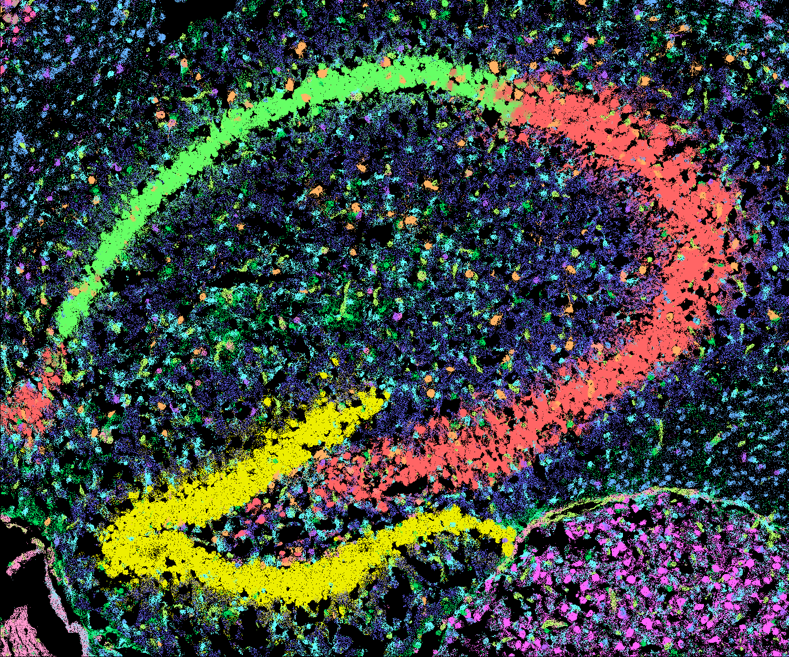

Vizgen MERSCOPE Starter Tutorial¶
The input is an SGE dataset from the adult mouse hippocampus, extracted by masking a coronal brain section (Slice Number: 2; Replicate Number: 1; file: detected_transcripts.csv) from Vizgen MERSCOPE Neuroscience Showcase.
It first runs the whole analysis with a single run_together command, then walks through the same analysis step by step: input preparation, SGE format conversion, FICTURE analysis, asset packaging, and data upload.
Run with run_together¶
Download the example data, hosted on Zenodo (10.5281/zenodo.17953582), into a work directory:
1 2 3 4 | |
Then run the pipeline, either with a local installation or with the Docker image:
1 2 3 4 5 6 7 8 | |
1 2 3 4 5 6 7 8 9 | |
The MERSCOPE profile (--platform merfish) reads the transcript file named by --raw-transcript. The result to deploy is out/merscope_hippo/cartl/merscope_hippo/ (a catalog.yaml and the PMTiles it lists). Add --dry-run to print the commands without running them.
How run_together differs from the step-by-step path
- FICTURE runs through
run_ficture2_multi(a joint model over a single sample) with single-molecule pixel decoding, instead ofrun_ficture2. - Feature filters are the
run_togetherdefaults: control features (Unassigned,Neg,BLANK/Blank,Intergenic,Deprecated,System,NCS-,NCP-) are dropped at ingest; predicted (Gm<digit>), mitochondrial (mt-/MT-), and ribosomal (Rps/Rpl) genes stay in the data but are left out of the factor models. Change them with--ingest-exclude-feature-regexand--exclude-feature-regex. - Point layers are packaged with
pmpoint(--use-pmpoint, 500 gene bins) instead oftippecanoe. - Outputs go under
--out-dir:tsv/<id>/(converted SGE),fic/(FICTURE), andcartl/<id>/(PMTiles andcatalog.yaml; deploy this), instead ofsge/,ficture2/, andcartload2/. - Publishing is built in:
--s3-uploaduploadscartl/<id>/to S3 (see Publishing). For Zenodo, runupload_zenodooncartl/<id>/as in the step-by-step path.
Step by Step (Individual Commands)¶
The same analysis, one command at a time. Use it to understand each stage or to customize it.
Set Up the Environment¶
1 2 3 4 5 6 7 8 9 10 | |
No tool paths needed
Once submodules/build.sh has run (see Installation), every CartLoader command finds spatula, punkst, tippecanoe, pmtiles, and pmpoint in the submodules/ directory of the repository, and the default color map at assets/default_color_map.tsv. Pass --spatula, --ficture2 (the punkst repository directory, which contains bin/punkst), --tippecanoe, --pmtiles, or --cmap-file only to use a different build or file. upload_aws runs the aws CLI from your PATH (--aws to override).
Input Data¶
Use the data downloaded above.
The MERSCOPE input SGE includes one comma‑delimited text file (detected_transcripts.csv; input.tsv.gz in the starter data) in the following format:
CSV File Format
1 2 3 4 | |
- Column 1: Unique numeric index for each transcript within a field of view (non-consecutive, ascending).
barcode_id: Zero-based index of the transcript barcode in the codebook; forms a composite key withfov.global_x: Transcript x coordinates (µm) in the experimental region; may be negative due to alignment.global_y: Transcript y coordinates (µm) in the experimental region; may be negative due to alignment.global_z: Zero‑based z‑position index.x: The x-coordinate of the transcript (µm), within the coordinate space of the field of view.y: The y-coordinate of the transcript (µm), within the coordinate space of the field of view.fov: Zero-based field of view index; forms a composite key withbarcode_id.gene: Gene name associated with the transcript.
Define ID and Parameters¶
1 2 3 4 5 6 7 8 | |
How to define Scaling Factors for MERSCOPE?
The MERSCOPE example data currently used here provides SGE in µm. Define the scaling factor from coordinate units to micrometers as 1.
SGE Format Conversion¶
Convert the raw input to the unified SGE format. See more details in its Reference page.
1 2 3 4 5 6 7 8 9 | |
| Parameter | Required | Type | Description |
|---|---|---|---|
--platform |
required | string | Input platform, which sets the default input columns and delimiter (options: 10x_visium_hd, seqscope, illumina, 10x_xenium, bgi_stereoseq, cosmx_smi, vizgen_merscope, pixel_seq, nova_st, generic) |
--in-csv |
required | string | Path to the input transcript CSV/TSV file |
--out-dir |
required | string | Output directory for the converted SGE files |
--units-per-um |
float | Coordinate units per µm in the input (default: 1, i.e. already in µm; 1000 for the Seq-Scope raw TSV; detected from the barcodes for illumina) |
|
--csv-colname-feature-name |
string | Gene-name column in the input (default: set by --platform) |
|
--csv-colname-count |
string | Count column in the input (default: set by --platform; without one, each row counts 1) |
|
--makefn |
string | File name for the generated Makefile (default: sge_convert.mk) |
|
--exclude-feature-regex |
regex | Pattern of feature names to drop (e.g. control probes) | |
--sge-visual |
flag | Draw the converted SGE as an image (xy.png) for a visual check |
|
--n-jobs |
int | Number of parallel jobs (default: 1) |
FICTURE Analysis¶
Compute spatial factors using punkst (FICTURE2). See more details on the Reference page.
1 2 3 4 5 6 7 8 9 10 11 12 | |
| Parameter | Required | Type | Description |
|---|---|---|---|
--main |
required 1 | flag | Run all five main steps |
--in-transcript |
required | string | Path to the transcript-indexed SGE file from sge_convert |
--out-dir |
required | string | Output directory |
--width |
required | int or comma-separated list | Hexagon width(s) in µm for LDA training |
--n-factor |
required | int or comma-separated list | Number(s) of LDA factors; one model per width × factor combination |
--makefn |
string | File name for the generated Makefile (default: run_ficture2.mk) |
|
--in-feature |
string | Path to the per-gene count file from sge_convert (default: the feature list made during tiling) |
|
--in-minmax |
string | Path to the coordinate min/max file from sge_convert (default: the range computed during tiling) |
|
--exclude-feature-regex |
regex | Feature names to leave out of the factor analysis. punkst matches the whole name, so end each alternative with .* or $ as needed (the example drops mitochondrial mt-* and predicted Gm<digits> genes) |
|
--cmap-file |
string | Color map TSV (default: assets/default_color_map.tsv in the CartLoader repository) |
|
--n-jobs |
int | Number of parallel jobs (default: 1) |
|
--threads |
int | Number of threads per job (default: 4) |
1: CartLoader requires at least one action: --tile (tiling), --segment (hexagon segmentation), --init-lda (LDA training), --decode (pixel-level decoding), --umap (UMAP of the factors), or --main for all five.
CartLoader Asset Packaging¶
Package the SGE and the FICTURE results into PMTiles and a catalog.yaml for CartoScope. See more details in its Reference page.
1 2 3 4 5 6 7 | |
Packaging without factor analysis
To host only the SGE (no factors), use cartloader run_together ... --no-ficture, which tiles the transcripts and packages them without training any model.
| Parameter | Required | Type | Description |
|---|---|---|---|
--fic-dir |
required | string | FICTURE output directory from run_ficture2; must contain ficture.params.json (the SGE paths are read from it) |
--out-dir |
required | string | Output directory for the PMTiles, assets, and catalog.yaml |
--id |
required | string | Dataset ID used in the catalog and output metadata (no whitespace) |
--makefn |
string | File name for the generated Makefile (default: run_cartload2.mk) |
|
--n-jobs |
int | Number of parallel jobs (default: 1) |
|
--threads |
int | Number of threads per job (default: 4) |
|
--spatula, --tippecanoe, --pmtiles |
string | Tool paths (default: the copies built under submodules/) |
Upload to Data Repository¶
Choose a data repository to host/share your output
CartLoader supports two upload options (AWS and Zenodo) for storing PMTiles of SGE and spatial factors in a data repository.
Choose the one that best suits your needs.
Upload the generated CartLoader outputs to your designated AWS S3 directory. The aws CLI must be configured with credentials that can write there (see AWS Upload Failures).
1 2 3 4 5 6 7 | |
| Parameter | Required | Type | Description |
|---|---|---|---|
--in-dir |
required | string | Directory with the CartLoader packaging output (containing catalog.yaml) |
--s3-dir |
required | string | Target S3 directory |
--profile |
string | AWS CLI profile to use | |
--aws |
string | Path to the AWS CLI (default: aws) |
|
--n-jobs |
int | Number of parallel jobs (default: 2) |
Upload the generated CartLoader outputs to a new Zenodo deposition or an existing one (see Zenodo Setup for the access token).
1 2 3 4 5 6 7 8 9 | |
| Parameter | Required | Type | Description |
|---|---|---|---|
--in-dir |
required | string | Directory with the CartLoader packaging output |
--zenodo-token |
required | string | Path to the file holding your Zenodo access token |
--upload-method |
string | Which files to upload: all (every file in --in-dir; default), catalog (the files listed in catalog.yaml), or files (the names given with --files) |
|
--catalog-yaml |
string | Catalog to read with --upload-method catalog (default: <in-dir>/catalog.yaml) |
|
--zenodo-deposition-id |
string | Existing deposition to upload into (default: create a new one) | |
--title |
required 1 | string | Title of the deposition |
--creators |
required 1 | list of str | Creators in "Lastname, Firstname" format, each quoted |
--description |
string | Description of the deposition |
1: Required when creating a new deposition, or when the existing one lacks it.
Output Data¶
-

View/Explore¶
The outputs are available in both CartoScope and Zenodo.
See output details in the reference pages for run_ficture2 and run_cartload2.